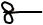
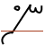
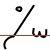
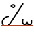
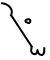
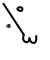
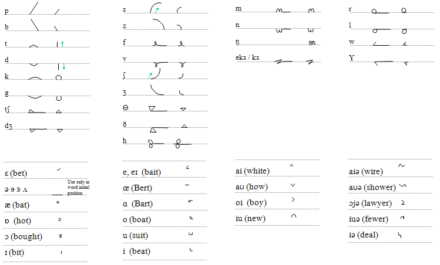
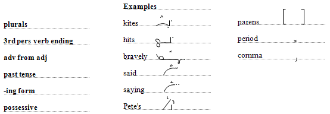
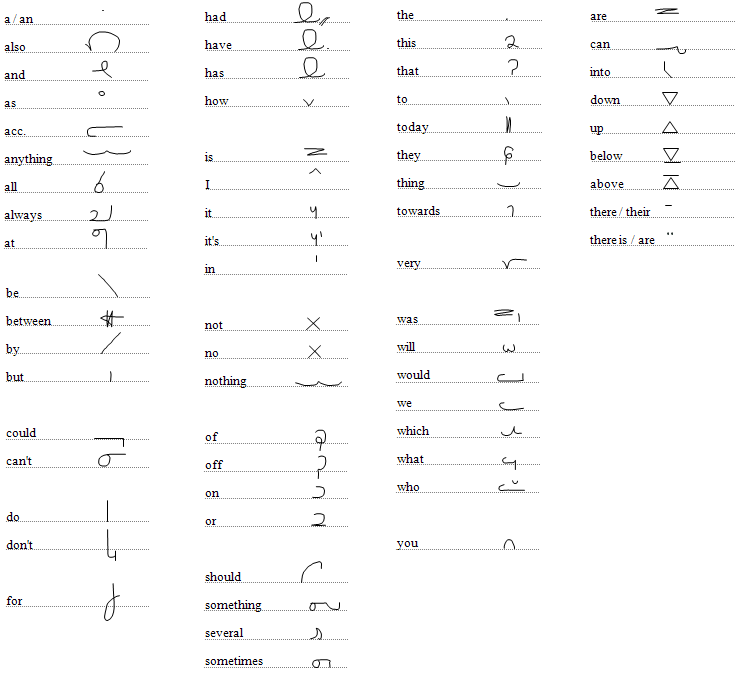

Sample text

Updated Wed 15 Oct 2014 • tags ishidic, myanmar, scriptnotes
These notes are about the use of the Ishidic script. There are no Ishidic characters encoded in Unicode as yet.
The script is a mixture of abugida, abjad, alphabet and other script techniques. It can be written without vowels if speed is essential. It can also be written in either linear or cascading styles, the latter providing for greater speed. Ishidic is highly optimised for efficiency in handwriting, but those features make it quite a complicated script to implement for computers.
Spaces are used to separate words.
Text usually runs from left to right, but it can also be written right to left. Digits in embedded numbers in right-to-left text run left-to-right, but embedded Latin text runs right-to-left just like the surrounding text.
The transcription is not phonetic, and is only loosely phonemic. For example, vowels are written only when needed for clarity of comprehension, and no distinction is made between short central vowels such as /ɘ/, /ə/, /ɜ/ and /ʌ/ . Furthermore, some glyphs represent grammatical information or logograms, rather than phonetic information. The writing therefore only covers an approximation to the phonetic information, and it is expected that context will play a role in clarifying ambiguities.
Consonants. There are two versions of most glyphs. Consonants followed by a vowel are drawn 'full-size', eg. pə. Unless modified by a combining mark, these consonants carry an inherent central vowel sound, represented here as ə, but actually including several possible central vowels, as mentioned above. Those not followed by a vowel are smaller, eg. /p/.
Variant forms: One glyph has a word-initial form that is slightly different to the form within or at the end of a word, eg. (initial) vs.  (non-initial) /hə/.
Vowels. Unstressed vowels in non-initial position are indicated by the long form of a consonant, eg. /kət/ vs. /kt/. Unstressed vowels in word-initial position are drawn as a simple extension of the baseline leading into the first consonant, eg. /əp/.
Other vowels are written using diacritics. Word initial vowels appear over a blank space, immediately to the left of the first consonant, eg. æt. Non-initial vowels are written as diacritics above the consonant they follow, eg. kæt.
Typically vowel diacritics are just used for the primary and secondary stress in a word. When speed is paramount, vowel diacritics can be omitted: they may be limited just to primary stress, or omitted altogether. This is particularly common in the cascading style (see below).
The use of long forms of consonants to indicate the presence of a vowel, however, is never optional. The same goes for initial unstressed vowels drawn with the baseline extension at the beginning of a word.
Glyph positioning. Most words will begin at and continue along the baseline in the linear style, though this is not a hard-and-fast rule, by any means. Word-initial consonant clusters may start above or below the baseline, but such sequences should approach the baseline for the word to continue.
The letters corresponding to the sounds p, s, ʃ, and small t or d usually start away from the baseline and move towards it at the beginning of a word.
In the linear style, the writer will usually lift the pen after p, s, ʃ, t, and d to return to the baseline. Near the end of a word, however, the writer may continue above or below the baseline.
The example of spæn illustrates both of these points,  . The initial s starts below the baseline (shown as a horizontal red line), and the final n appears above the baseline at the end of the p glyph. It would be equally fine to write this as either  or even.
In the cascading style, however, the writer continues through a whole word at a time without lifting the pen. This produces words that look very like nastaliq fonts. The cascading style is used for speed of transcription.
In the cascading style, letters for the following pairs of sounds are identical: /p/ and /b/, /s/ and /z/, /ʃ/ and /ʒ/, and small /t/ and /d/. If desired, the unvoiced phoneme can be identified by adding a dot to the centre and left of a letter, eg.  spæn (cf.  bæn).
Numbers. European digits are used for numbers, and numbers are always written this way - they are not spelled out as words.
Logograms. The script contains a number of logograms - ligatures representing common words. Sometimes these bear some resemblance to the word as spelled out, though typically abbreviated; other times they are completely idiosyncratic forms based on pictograms or sometimes quite arbitrary shapes. In either case, these forms are represented using a single glyph.
Where more than one logogram appears side-by-side, they should be written together, with no intervening space.
Logograms are normally written on the baseline, however for some logograms vertical position relative to the baseline is an important distinctive feature. For example, the logograms for the indefinite and definite articles are the same, apart from their position.
Some consonant groupings are written using combined forms that do not proceed along the baseline as per normal text. The use of these clusters varies from writer to writer, however they are all recognisable combinations of the phones concerned.
Case. There is no upper-vs-lower case distinction, however a capitalisation in a script that is being transcribed can be signalled using a special symbol, and so can a sequence of all upper-case characters in that script.
Grammatical modifiers. Typically, grammatical endings are written using special symbols, rather than spelled out as pronounced. To do this, a mark is added immediately after the point where the pen is lifted at the end of the word. The word itself is typically transcribed in its base form, eg. singular, or present tense.
However, this is not required, and a writer is perfectly free to spell out the word in full. This leads to two possible forms for many words.
Grammatical modifiers are used to:
Logograms may use the grammatical modifiers. They may also use the 'not' modifier to signify the negative.
Basic letters. These are shown in relation to the baseline.

Modifier forms and punctuation.

Logograms.
